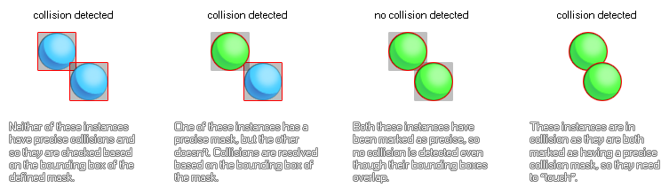

In a previous section (Defining Sprites) we saw how to add a sprite resource into our game through loading it as a pre-made graphic. However,
GameMaker:Studio can do much more than that and so this section will take you through the more advanced options available to you from the sprite resource window.

At the bottom-left, you can indicate the origin of the sprite, which is the point in the sprite that corresponds to its position within the room, ie: when you create an instance at a particular x/y position, the origin of the
sprite is placed there. Default it is the top left corner of the sprite but it is often more convenient to use the center, which can be found easily by clicking the Center button, or some other point on the sprite.
You set the origin manually by clicking in the sprite image which will move the cross to the point you clicked, or by inputting different values for x and y in the corresponding boxes. Note that you can even set an origin
outside the area of sprite by using negative numbers (for left and up) or positive numbers larger than the sprite width and height (for right and down), which can be very useful when dealing with objects that
need to draw composite sprites.
The collision checking options are very important ones for your game, as they will directly influence how your objects interact and how your game runs, with the wrong settings even having a negative impact on the
over all performance. Why is that? Well, whenever two instances meet, and both instances have a valid mask, a collision event is generated by checking the overlap of the mask, which can either be precise or not, and
adapted to the image index or not. Below is an image to illustrate this :

As you can see, when precise collisions are involved then they are resolved on a per pixel basis, and this can be very slow, so if you don't need them, always have precise collisions turned off! The same
rule of thumb goes for the separate masks option (as long as "precise" is checked), as this generates a new collision mask for every single frame of an animated sprite (rather than just apply one "best fit" average mask
for all sub-images). See below for more information on collision masks.
This section of the sprite properties window deals with how GameMaker:Studio stores the images that make up your sprite on texture pages for use with devices and browsers. Now, for Mac and Windows
platforms this is not normally too important, but when you start to develope for iOS, Android or HTML5 the proper management of your image assets (textures) becomes very important as poorly managed textures
can have detrimental effect on your game, causing performance issues.
The Tile:Horizontal and Tile:Vertical check boxes are, by default, not notmally checked as most times you do not want to tile sprites. However, in certain circumstances you may wish them to tile, meaning
that you should check these options, especially if you are going to be scaling the view or room as scaling can introduce artefacts into the graphics of a game if the texture page is not generated properly.
If your sprite is going to be used as a texture map for a 3D game, then you should check the Used for 3D box and the sprite will be given a texture page all of its own. Note : This will increase the vram
needs of your game tremendously and so great care must be taken when using this option. Also note that all 3D textures must be a power of 2 (ie> 128x128, 256x256, 512x512 etc...).
Finally, you can chose the texture group that you wish the sprite resource to belong to. Basically, a texture group (previously defined in Global Game Settings : Texture Groups
tab) is something that you can set up so that all the image resources that you need for specific rooms or levels of your game can be stored together. So, for example, you can have all your level 1 images in one texture group,
all your level 2 images in another etc... and GameMaker:Studio will try to place all those grouped resources on the same texture page to reduce texture page swapping while your game is running on the chosen target platform.
Note : This may not always be necessary and performance increase from this method will depend on whether the target device is CPU bound or GPU bound (see Advanced Use : Debugging).
For more detailed information on texture pages and how they are generated, please see More About Backgrounds : Texture Pages.
GameMaker:Studio has a complete suite of tools for editing your sprites, and that includes the order in which their sub-images are displayed, what mask properties they should have and even a graphic editor so you
can create your own sprites from scratch! These things are all covered in the sections below :